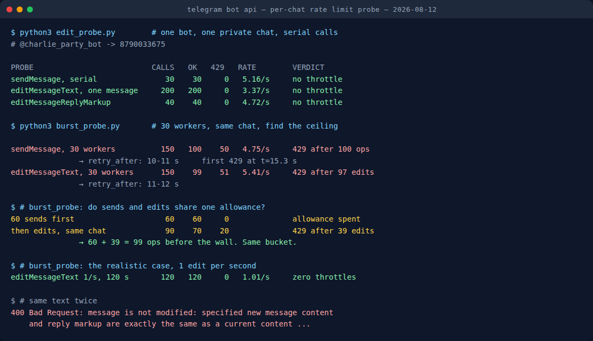

Why Your Telegram Game Bot Freezes Mid-Round (Measured)
You are four rounds into a quiz. Everyone is answering fast, the bot is keeping up, and then it just… stops. Ten seconds of nothing. Somebody types “?”. Somebody else says the bot is broken. Then it comes back to life as if nothing happened and the round continues.
The bot did not crash and your host did not run out of memory. Telegram told it to sit in the corner for a few seconds, and it did.
Telegram is unusually honest about this in its official bot FAQ: “In a single chat, avoid sending more than one message per second. We may allow short bursts that go over this limit, but eventually you'll begin receiving 429 errors.” That is accurate and it is also unusable, because the entire question when your game stalls is how short is a short burst. Nobody publishes the number.
So on 12 August 2026 I pushed one of my own bots until it broke, and wrote down where the wall is.
The short version
- A single chat absorbed about 100 operations before returning HTTP 429, at which point Telegram asked for a wait of 8 to 12 seconds.
- Edits spend the same allowance as sends. Sixty messages followed by edits gave me only 39 edits before the wall. Ninety-nine operations either way.
- The documented “one message per second” is a guideline, not a gate. I sent 30 messages in 5.8 seconds, five times the stated rate, with zero throttling.
- A live countdown works fine: one edit per second for two minutes, 120 out of 120 successful, nothing throttled.
- Before Telegram rejects you it parks you. Individual calls stretched from 220 ms to over 7 seconds while still succeeding. That is the “the bot feels sluggish” phase, and it arrives before the silence.
How I measured it
One bot, one private chat, one script hammering the Bot API over plain HTTPS with no library in between, so nothing could quietly retry or rate-limit on my behalf. The bot is a retired party-game bot of mine with no users left to annoy. Every message the probe sent was deleted afterwards, 258 of them.
Each probe ran twice in spirit: once serially, where the request round-trip itself paces you, and once with 30 concurrent workers, where nothing paces you but Telegram. The serial runs answer “can a normal bot loop do this?”. The concurrent runs answer “where is the wall?”. Both matter, and they give completely different impressions of the same API, which is exactly why the folklore is such a mess.

The one-message-per-second rule is not a gate
The first thing I tested was the rule everyone quotes. Thirty messages, one after another, as fast as the round-trip allowed: 30 succeeded in 5.82 seconds, a sustained 5.16 messages per second, median response 189 ms, not a single 429.
Then 200 edits of one message, back to back: 200 out of 200 succeeded in 59.3 seconds, 3.37 edits per second, median 223 ms. No throttling, and no sign of a per-message edit cap: a message that has been edited 200 times edits just as happily as a fresh one.
So if you write the obvious loop, in the obvious way, on a normal connection, you will never see the documented limit. This is precisely why so many bot authors believe rate limits are a myth right up until the evening it matters.
The wall: about 100 operations, then ten seconds of nothing
Serial calls cannot find the ceiling because the round trip is the bottleneck. So I threw 30 concurrent workers at the same chat.
| Probe | Calls | Succeeded | 429 | What Telegram asked for |
|---|---|---|---|---|
sendMessage, serial | 30 | 30 | 0 | none |
editMessageText, serial, one message | 200 | 200 | 0 | none |
editMessageReplyMarkup, serial | 40 | 40 | 0 | none |
sendMessage, 30 workers | 150 | 100 | 50 | retry_after 10–11 s |
editMessageText, 30 workers | 150 | 99 | 51 | retry_after 11–12 s |
| 60 sends, then edits | 150 | 130 | 20 | retry_after 8 s |
editMessageText, 1/second, 120 s | 120 | 120 | 0 | none |
The sending run got 100 messages through and then hit the wall, 15.3 seconds in. The edit run got 97 edits through before its first 429. Two different methods, the same neighbourhood: roughly a hundred operations, then a forced pause of about ten seconds.
The 429 body is the useful part. Telegram does not just refuse. It tells you exactly how long to wait:
{"ok": false, "error_code": 429,
"description": "Too Many Requests: retry after 10",
"parameters": {"retry_after": 10}}Which means a well-written bot never needs to guess. Read parameters.retry_after, sleep for that long, carry on. The established libraries will do this for you if you let them. python-telegram-bot ships an AIORateLimiter that both paces outgoing calls and retries on 429. The single most common reason a game bot behaves badly under load is that someone disabled that and hand-rolled a retry loop with a fixed one-second sleep.
It slows you down before it stops you
The detail I did not expect: the throttle is not binary. With 12 concurrent workers I never saw a single 429, but I also never got more than about 7 successful operations per second no matter how many workers I added. The median call still returned in 279 ms, while the slowest call in the same batch took 7.4 seconds and then succeeded.
Telegram was holding requests open rather than rejecting them. In practice that means there are two failure modes, and players experience them differently. First the bot gets mushy: answers arrive a beat late, the countdown skips a number, someone says “lag”. Only if you keep pushing does it go properly silent for ten seconds. If you only handle the 429 you have handled the second one and not the first.
Edits come out of the same purse
This is the finding I would actually want if I were building a game bot, and I have not seen it written down anywhere.
A game bot does two things at once: it announces what happened (sendMessage) and it keeps a live scoreboard or timer up to date (editMessageText). It is tempting to assume editing is cheap, since you are not creating anything, just updating a message that already exists.
It is not cheap. After a full cooldown I spent 60 calls on plain sends, all successful, and then immediately started editing. The edits died after 39 of them. Sixty plus thirty-nine is 99, the same wall the pure-edit run hit at 97, and the pure-send run hit at 100.
The practical reading: budget roughly a hundred operations per chat per burst, not a hundred messages plus a hundred edits. A round that posts 20 results and refreshes a scoreboard 80 times has already spent the lot. This is also why animating a scoreboard is a genuinely expensive design decision, even though it looks like the polite, low-noise one.
Yes, you can run a live countdown
The reassuring result. I edited one message once per second for two minutes, the way a round timer would: 120 calls, 120 successes, zero throttling, an achieved rate of 1.01 per second. A one-second countdown is comfortably within budget and always was. The 3.37/s serial run says you have roughly three times that headroom before it becomes interesting.
There is one trap, and it is a good one:
400 Bad Request: message is not modified: specified new message
content and reply markup are exactly the same as a current content
and reply markup of the messageTelegram refuses an edit that would change nothing. That sounds harmless until you notice how countdowns are usually written: compute the seconds remaining, round to a whole number, render “30 seconds left”, edit. Run that loop slightly faster than once per second, or let one call take 400 ms longer than usual, and two consecutive ticks render the same string, and you get a 400 in the middle of a working countdown. Naive error handling then retries it, which produces the same string again.
Either check whether the rendered text differs before calling, or make each edit unique. Do not paper over it by catching every 400 and ignoring it, because that swallows the real errors too.
Polls play by different rules
Since quiz bots live on polls, I checked what editing means for them:
editMessageTexton a poll message fails with400 Bad Request: there is no text in the message to edit. A poll is not a text message with buttons, so there is no question to rewrite, and you cannot fix a typo in a live poll.editMessageReplyMarkupon the same poll succeeds. You can attach or change an inline keyboard around a poll even though you cannot touch the poll itself.stopPollworks once and returns the finalPollobject withis_closed: trueand the vote counts. Calling it a second time returns400 Bad Request: poll can't be stopped. If your round-end handler can fire twice (a timer and a last vote arriving together, say), treat that error as “already closed”, not as a failure.
If you are hosting the game night, not writing the bot
Three things worth knowing when it happens to you:
- A ten-second silence after a flurry is a flood wait, not a crash. Wait it out before restarting anything. Restarting mid-wait usually makes it worse, because the bot comes back and immediately re-sends whatever it thinks it owes everyone.
- Rapid-fire formats are the expensive ones. Buzzer rounds where twelve people all press a button in the same two seconds spend the allowance fastest. Turn-based formats barely touch it.
- The stall is per chat. If the bot is playing in two groups it will not usually stall in both at once — which, if you are trying to work out whether the bot is down or throttled, is a quick thing to check.
Want a game night that cannot rate-limit?
Our party game Mini App runs inside Telegram: Truth or Dare, Never Have I Ever, Would You Rather. Free, no install.
Open the free Mini App Not on Telegram right now? Play in your browser →What I did not test
Everything above was measured in a private chat. Telegram's own FAQ gives a different and much lower figure for groups, no more than 20 messages per minute, and I could not verify it tonight, because the account I run these probes from is currently restricted from creating new groups and I was not going to run a flood test in somebody else's. So treat the hundred-operation number as a per-private-chat measurement, and assume a group is stricter, not looser, until somebody measures it.
I also did not test the paid tier. The same FAQ notes that bots can pay for broadcast headroom: up to 1,000 messages per second at 0.1 Stars per message beyond the free 30/s, with a 100,000-Star balance required to switch it on. That is a mass-notification feature, not a game-night one; no party bot is going to need it.
The rules I would actually code to
- Budget ~100 operations per chat per burst, counting sends and edits together.
- Pace steady work at 5 operations per second or under in one chat; nothing in my runs objected below that.
- Always honour
parameters.retry_afteron a 429. Never sleep a fixed second and retry. - Watch your own latency, not just your error rate. Requests stretching past a second are the early warning.
- Make every edit change something, or skip the call.
- Treat
poll can't be stoppedas idempotent success.
None of that is exotic. But it is the difference between a quiz night that runs and one that pauses for ten seconds every fourth round while twelve people type “?” into the group.
FAQ
Why does a Telegram game bot go silent for a few seconds mid-round?
It has hit a flood wait. Telegram allows a burst of activity in one chat and then returns HTTP 429 with a retry_after value. In my runs the wall arrived after about 100 operations in a private chat, with retry_after values of 8 to 12 seconds. The bot is not crashed, it is being told to wait.
Can a Telegram bot run a live countdown by editing one message?
Yes. One edit per second for 120 seconds gave 120 successes and no throttling, and 200 back-to-back edits of a single message at 3.37/s also passed cleanly. There is no low per-message edit cap to design around.
Do edits count against the rate limit?
Yes, against the same allowance as sending. Fresh, editMessageText survived about 97 calls. After spending 60 calls on sendMessage first, only 39 edits got through, 99 operations in total either way.
What does “message is not modified” mean?
A 400 error returned when an edit would produce exactly the same text and reply markup the message already has. Countdowns that round to whole seconds hit it when two ticks render the same string. Check before you call, or make each edit unique.
Related tests on this blog
- Telegram poll limits, the other set of numbers a quiz bot runs into.
- I messaged 18 “best” Telegram game bots: seven never replied.
- How to run a Telegram game night, stalls and all.
- Best Telegram party games and bots in 2026.
- Telegram's 4,096-character limit is not characters: same method, different boundary.
- Your dead Telegram bot still has a mailbox: the same bot, switched off, was still collecting Start presses 77 days later.
- All our Telegram bots and Mini Apps.
Telegram Party Pack — 255 group-chat prompts
Truth or Dare, Never Have I Ever, Would You Rather, Most Likely To, Paranoia and Story Chain, written out so your game night does not depend on a bot staying inside its rate limit.
Get the pack